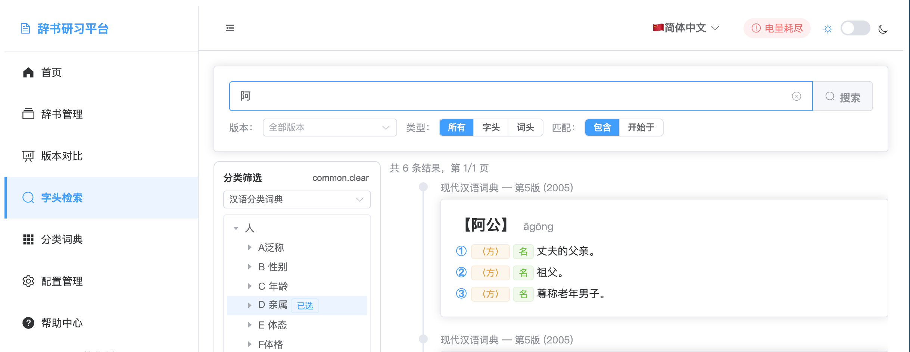

The headword search function allows you to quickly find specific entries, definitions, or examples in the dictionary database. The system supports multiple search methods, including exact match, fuzzy search, and regular expressions, helping you efficiently find the information you need.
Supports real-time search, results displayed as you type
Filter by dictionary, version, part-of-speech, etc.
Supports exact match and fuzzy search modes
Quickly preview entry details and context

Headword search main interface
The search interface provides a clean and intuitive search experience, including a search box, filtering options, and result display area.
Simple keyword search, suitable for quick lookups
Multi-condition combined search, precise target finding
Use regular expressions for complex pattern matching
Search within entry names
Find keywords within definition content
Find usage examples within examples
Use double quotes around search terms for exact match, avoiding fuzzy search results.
Use * to match any characters, expanding search scope.
Use logical operators like AND, OR, NOT to combine multiple search conditions.
Use filters to limit search scope by dictionary, version, or part-of-speech.
Display search results in list form, including entry, definition, examples, and other information
Click on an entry to view complete detailed information and related content
Display statistical information and distribution of search results
Highlight matched keywords in results